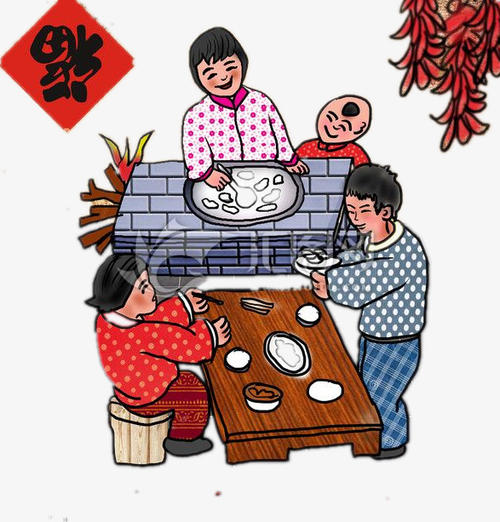

Jiaozi is a kind of folk food with a long history, and eating jiaozi is a special folk tradition of the Chinese people during the Spring Festival.Because take "more old hand over son" meaning, so popular with the people.There is a folk saying "delicious but dumplings".Every new Spring Festival, dumplings become an indispensable food.In many parts of China, the custom of eating "jiaozi" on New Year's eve is a heavy feast that no one can replace.In addition to the northern dumplings as a holiday food, southerners also eat dumplings on certain occasions.
In modern times, people think that the shape of jiaozi is like gold ingot, indicating wealth.
Remember when I was a child, the New Year's eve dumplings, the adults always at the beginning of the bag, the first bag a few sugar, peanuts, dates, copper dumplings, eat people will be very happy oh.For example, eating sugar indicates that the days of the next year will be more and more sweet, eating money means that the next year will be profitable, eating peanuts or red dates may want to give birth to your son early, are sustenance of the New Year's hope and expectations.
A lot of areas eat dumplings at the same time, but also to add some non-staple food, tofu, persimmon cake, fish and so on, are auspicious, the implication of surplus. The stuffing of dumplings is also a variety of ways to eat is also a variety of, it is said that the Inner Mongolia and the northeast region when cooking dumplings to add fans, henan region when cooking dumplings with noodles, the United States said: money wears ingot, is really auspicious.
People are expected to take the past year's troubles, like eating dumplings like a piece of eat, pray for good luck in the New Year.Eat dumplings and pray for the next year early birth of your son, the family thriving, children have the meaning of promising